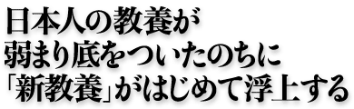
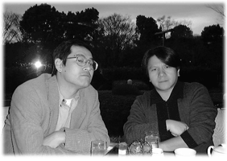
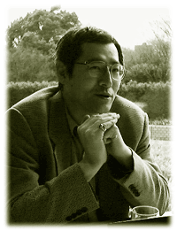
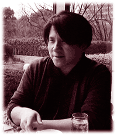

|  |

|
山形浩生×宮崎哲弥 |
| 初の単独著書『新教養主義宣言』を上梓し、いよいよ「啓蒙家」としての本領を発揮しはじめた山形浩生氏。近刊『放談の王道』『愛と幻想の日本主義』で、呉智英氏、福田和也氏を相手に抜群の舌鋒の冴えをみせてくれた時論家の宮崎哲弥氏。21世紀の日本のゆくえを占うつもりなら、この２人の知識人の言動からは目がはなせない。山形氏の提唱する「新教養」の可能性をめぐって、64年生まれと62年生まれの２つの知性がいまぶつかりあう。 |
■若いコたちに読んでもらいたくて書いた 宮崎 タイトルにある「教養」というのは、非常に古風な、しかし手垢にまみれすぎた言葉ですよね。それをあえて打ち出して、こういうかたちで挑発をやってやろうと目論んだんでしょ（笑）。でもその意図はどこらへんにあるの。 山形 誰でも「いま勉強したい」とか「あのときもっと勉強しておけばよかったな」と思う瞬間があると思うんだ。大学に入ったばかりのときとか、就職してからとか。「しまった、もっと勉強しておけば」なんて。「教養」という言葉が流行っているかどうかはさておき、「勉強しなきゃ」という危機感みたいなものは、誰にもあるんじゃないだろうか。でも、それほど大したことを書いたわけじゃない。書き方はいやらしいんだけれども（笑）。
宮崎 いやらしいよ（笑）。でも、書かれていること自体はとてもスタンダード。確かに教養体系になっている。バロウズからクルーグマンまで、チャペック、ディック、ピンチョン、ラファティ、ドーキンス、キョーコ・オカザキ、呉智英……などなど、「新教養」として押さえておかなければばならない固有名が総登場している。しかも「とりあえず押さえておきました」ではダメで、一度は沈潜耽溺したほうがいいものが精選されているね。けれど、いやらしくいうと、何となく「懐かしい歌」を聴いているような気もするのね。下の世代のコたちには、一種の教養観の押し売りみたいにみえてないかな。それとも共有は可能？ 山形 まず「それがあるんだ」ということから教えるのが必要なんだと思う。全体像が分かれば、細かいところは応用できるから。ところが現状は、枝葉の部分ばかり詰め込まれて、根っこのところはどうなっているのか分からない。まだ教養観の共有は無理だから、いまは「ここら辺を押さえれば大丈夫」ってことを分からせる。なぜそこが大事なのかを分からせるというのが重要だと思うんだ。 宮崎 おっ啓蒙家。人を啓蒙したいという欲望はあるんですか。 山形 本業（シンクタンク研究員）のほうで、クライアントに対していちいち初歩の初歩から説明しなければならないことが多いんですよね。啓蒙すれば仕事はやりやすくなるな。 宮崎 でもこの本、内容はスタンダードだけど、いいっぷりは居丈高だよね（笑）。そこがケーモー、ケーモーしていないともいえる。 山形 「こんなものも知らないの、オマエら」って（笑）。自分で書きながら、こんなに偉そうでいいんだろうかと思った。 宮崎 居丈高だけど、でもクルーグマンやバロウズなんかはもちろん、リュインの『アイアンマウンテン報告』みたいなものにしても、本気で若いコたちに読んで欲しいと思っているんだね。 |
山形 もちろん。こないだ出た『21世紀日本の構想』ってあったでしょ。あれを見て、構想の書き方が分かってないなと思った。「構想を持ちましょう」じゃなくて、「構想をどう持てばいいか」をいわなくちゃいけないのに。「こういうふうに持っていくためには、こうしなければならない」という原理論があって、現実的な動きがあって、具体的な行動がある。『新教養主義宣言』でいいたかったのは、そういうふうに考えられるようになってくれよ、ということだね。『アイアンマウンテン報告』についても、それを読んで「素晴らしい」といってくれるよりも、「じゃあどうすればいいのよ」って考えて欲しいわけ。 |
 |
■「と学会」だって「新教養」だ ――−宮崎さんは呉智英氏との対談『放談の王道』（共同通 信社）で、立花隆を啓蒙書のライター、啓蒙家として評価していますね。彼にくらべて日本の知識人は無教養である、と。欧米の知識人はもっと教養あるぞ、と。 宮崎 「教養」ってのはもともと西欧の概念ですから、日本人が「無教養」の傾向があるのは当然です。ただ違っているってことを認識しないと議論が不可能になっちゃうでしょ。あそこで強調したかったのは、立花さん自体の評価とかじゃなくて、彼の頭脳は、欧米の教養人が当然の前提として持っている汎用性の高い知的システムを搭載してるよってことなんです。つまり知識や教養が乗っかってるＯＳが日本の学者、評論家、ジャーナリストなんかとはまったく違っている。いわば教養の組織システムの汎用度が違うんだと。 山形 森山和道というサイエンスライターが、この『新教養主義宣言』を読んでこんなことをいっていた。アメリカは日本の２倍の人口があって、『サイエティフィックアメリカン』（『日経サイエンス』）という科学雑誌は日本の10倍ぐらい売れている。つまり、科学的教養の素地がまるで違うんだって。同じ話をして通 じる基盤というのがそれだけ違ってきているのは当然だと彼はいう。だから今の状況では、そっちの世界を何となく匂わせておいて、「おもしろそうだぞ」と興味をひくしかない。 宮崎 でも「新教養」っていうのは、日本でもそこここに具体的に出てきてると思うよ。たとえば「と学会」とかさ。あれは「新教養」の精髄だと思うもん。 山形 たしかに「と学会」的なものごとのおもしろがり方ができるには、ある種の教養のベースがなければならないわけだからね。 宮崎 とてもオーソドックスな科学知識から神話、宗教、神秘思想、ＳＦ、人類学、歴史学、言語学まで、網羅的に示されているでしょう？ それを楽しむ方も、そういう教養への配意がなければ楽しめないわけじゃない。 「と学会」は広義のオタク文化のなかから出てきたものだけど、とくに会長の山本弘には非常にオーセンティックな教養への信頼がうかがえるんだ。「オタクから新教養へ」という道を拓いていると思う。 ■ＯＳとしての教養はいかに培われるか ――−ＯＳとしての教養というのは、どのようにして培われるものなんですか。 宮崎 それは難しいんだけど、大雑把ないい方をすると、基本的には数学だと思うんですよ。数理的思考と言い換えてもいい。あるいは哲学。まあ数学は経験科学というより哲学の一種と考えた方が妥当ですから、広い意味で哲学でしょう。どういうことかというとね、いろんな事物の背後に抽象的な原理や本質をみてとる思考だと思うんです。逆にいえば具体物を信用しない（笑）。例えば一個のケーキと一本のスプーンのなかに同じ「一」という属性を見出さないと数学って成り立たないよね。ケーキはケーキだとか、匙は匙だとか具象性にこだわっていたらできない。 山形 僕は出が工学部なもので、数学的というよりも工学的な発想かもしれないな。たとえば海外援助のプロジェクトがあるとするでしょう。欧米流のスタイルだと、そこで必ず抽象化のプロセスがある。まず理論的モデルを作るわけです。それが最終的には理念なり志向性になっていく。そうしたものを持ってきてぶつけられると、やっぱり日本人は太刀打ちできない。日本人はせいぜいのところ、「理論的にはそうはいっても、具体的にはここは難しいよ」みたいな枝葉のことしかいえない。必ず大きな理屈のパワーには負けてしまうんだよね。で、細かいところの調整ばかりやらされるハメに陥って、いいかげんうんざりしてしまう。西洋人たちが高度に抽象的な理論モデルを構築して、そこから考えていくのは、べつに彼らが一丸となって陰謀組んでいるわけではなくて。どうしてそうなるのか、具体的なプロセスも公開しているし。日本人にだってできるはずだけど、できない。それが教養の差でしょう。 宮崎 日本人にもできるとおっしゃったけど、私はかなり悲観的ですよ。戦後、あの壊滅状態から奮起して、官民一丸となって重化学、造船、自動車産業を興し経済を世界レヴェルに引き上げたのと同様に、ＩＴ革命によって「第二の敗戦」から再起し、アメリカを追い越すんだみたいな話がまことしやかに流通 してるでしょう。そういうかたちでの「復興」はもう手遅れだよ（笑）。 山形 あはは。 宮崎 日本の知識人には論理的同型性を見抜く力がない。たとえばヒトのクローン胚を使った研究を事実上禁止しておきながら、臓器移植は推進する。背景に年間40万人の中絶が行われているという現実がありながら。その背景にある問題の同型性、関連性を見抜くことができないんだ。 山形 日本人じゃないものにならなきゃいけないというのなら、日本人じゃないものになってみろよ、といいたいね。培わなければいけないのなら、オレが培ってやるぜ、という気はあるんですよ。水際までは連れていけるはず。 ■日本人はもっとバカになる必要がある ――−山形さんは具体的にどういう人に向けて、「教養を持て」おっしゃっているんでしょうか。 山形 みんな。誰だって「オレはアイツよりは」って心の中で思う瞬間があるんですよ。まずはそういう人たちですね。たとえばサラリーマンは「ケッ、部長がなにいってんだよ。オレのほうが分かってらい」と思っているんですよ。そういう人たちにとりあえず「もうちょっと勉強するか」と思わせる。知っていれば役にたつこともかなりあるんだよ、メリットだっていっぱいあるんだよ、と。それはクローン技術と臓器移植の関係がわかるということから、多少のファイナンスの知識を持っていれば株屋に騙されないでもすむというつまらないところまで、現実的なメリットというのはある。それはたんに見栄で英会話スクールに行きますというのとは違うところで、知っていたほうがいいことってたくさんあるわけで。 宮崎 現実的な需要があるのなら教養はなくならないだろう（笑）。なくならないと思うけど、でも実需がなくなることで、教養が消え失せても、それはそれでかまわないと俺は思う。 山形 だけど、平均では下がっていっても、いくつか救えるところは救いたいね。見込みのあるところはあるんではないか、と。大きな波が退いたときに、それが岩となって残ってくれていたら嬉しいなと思う。 ■デモクラシー神話が崩壊した時代の啓蒙とは 宮崎 いきなりだけど、山形さんはデモクラシー信じてる？ 山形 うーん、そのかなりのものは操作できるし、その意味ではデモクラシーは信じてない。 宮崎 でも、デモクラシーと近代啓蒙思想というのは裏表の関係にあったわけじゃない？ 主体的個人が意志決定をして、投票行動とかを通
して民主的政治に結びついて行くんだ、というのがデモクラシーでしょう？ その主体的個人を涵養するのが教養。でもそれは山形さんも認めるように単なるフィクションでしかない。私に言わせれば、そのフィクションそのものが一種の統治技術に過ぎないわけで。 山形 デモクラシーなんてできないとは思っているけれども、「でももしも君たちが本気で信じているなら、その方向に少しでも近づきましょうよ」という話をしたいとは思っているんですよ。 宮崎 私はＡＭラジオというメディアで、トークラジオ・スタイルの番組を持っているんだけど、やりながらときどき思うのは、フィクションとしてだって、この国の民主主義はよくもっているな、ということ（笑）。例えば、選挙は別 に棄権したっていいんだっていう話をすると、ものすごい数の抗議がくるんだぜ。「棄権がＯＫなんてなんたる発言か」「テレビやラジオで政治的なオピニオンを発している人間が、棄権をしてもいいなんていうのはケシカラン」というわけ。電話をかけてくる人の７、８割がそうですよ。しかも、年寄りだけじゃなくて、同世代からすらある。 山形 へええ。 宮崎 まして山形さんがこの『新教養主義宣言』で提起しているように、「選挙権を売ろう！」なんてやったら非国民扱い間違いなし。これが日本の現実です。 山形 あはは。 宮崎 「売ってもいいんじゃない」ということ自体がイケナイというんだから。棄権にしても、そもそも権利というのは、それを行使しない自由がセットになっていてはじめて権利なんだという幼稚園レヴェルのことをいちいち説明しなければならない。じゃあ棄権がいけないというんだったら、選挙を義務化せよというご意見ですね、それはそれで筋が通 っているから賛成してもいいですっていうと、これがチガウっていうんだ（笑）。義務化論じゃないって。じゃあ一体何をいいたいんだよう（涙）。 |
|  | 結局こういう人達にとっては投票がアイデンティティのよすがになっているんです。投票真理教。自分は一度も棄権したことがないっていうのが誇りなの（笑）。だから棄権もＯＫなんていうと自分の尊厳を犯されたような気がするんだろうね。そのあなたの尊厳は認めるから一般 化するなよっていいたい（笑）。 |
■エリート軍団を作って世の中を変えていきたい 宮崎 これまでの日本の選挙がどのように行われてきたかというと、地域、企業、組合、宗教法人といった共同体による圧力ですよ。選挙管理委員というのはだいたい地方、近隣の有力者で、彼らのパフォーマンスは投票率で評定されるから必死コイて投票所に行かせる。町内会のボスなんかに監視させてね。だから別 に何の政治的動機もないけど、ゴチャゴチャいわれて面倒臭いから行かざるを得なくなるわけです。（投票に）行かないことで発生するコストが行くコストを上回るわけね。企業ぐるみや組合ぐるみなどの場合は、行くことによって得られる政治外のベネフィットが行くコストを上回る。こうして政治的意思なんかとはまったく無関係に選挙が行われてきた。ところが都市化によって共同体が崩れて同調圧力が働かなくなったために、あらゆるベネフィットやコストが投票に行くコストを上回らなくなってしまったのが投票率逓減の原因。 山形 ということは、この国では民主主義と近代啓蒙主義というのはちっとも結びついていなかったということですね。民主主義を信じていなくても、啓蒙していいんだ（笑）。 宮崎 まったくＯＫ（笑）。啓蒙しても民主主義の役には立たないけど。一応西洋には、自立した個人を作るために啓蒙があるというタテマエがあるけど、この国ではなーんの関係もない。そうなると教養は趣味に近くなってくる。趣味、嗜好、道楽ですね。 山形 趣味としての教養か…。 宮崎 まあ、趣味こそが個人の個人性の核ともいえるから、めぐりめぐると真っ当な教養になるかも。「と学会」なんかそういう感じでしょ。 山形 うん、全員を啓蒙するんじゃなくて、エリート軍団をつくって、どんどん世の中を変えていくようなことをやりたい。 宮崎 同世代ぐらいの頭のいい人って最後はみんなそういうな。宮台（真司）さんも福田（和也）さんも。 山形 中央省庁でも、昔いたような、「オレの言うことが正しいんだ。業者は黙ってオレの言うことを聞け」というタイプの役人はどんどん減っているんですよ。我々業者は、そういう役人にあたると仕事がやりにくくていやだったんだけど。そういう人は減って、最近は「どうでしょうね。国民の言うことをよく聞いて」とおとなしい優等生タイプの役人が増えてきた。ところがそういう人では何も決まらなかったりする。「徹夜で報告書を書け！」というオッサンが出てくるのは個人的には困るけれども、とりあえず「オレは世の中を動かせるんだ」と認識する人、動かそうと努力する人が少しは増えて欲しいなと思う。何もしないで「国民の総意で」とばかり言い続けて、顔色ばかりうかがっているようじゃ、なにも動かないなと思う。それならば、何をどうすればいいのかという絵を描いてやれ、という気持ちも僕には若干ある。この国を支配しようと思っているわけではなくて、なにか絵を描きたい。 宮崎 それはどういう絵なの。現状のどこが問題なのって、あえて田原総一朗的なツッコミを入れますが。 山形 そこらへんのところは、次回の本でじっくり開陳したいと思いますので、まずは『新教養主義宣言』を熟読しておいてください（笑）。 |
山形浩生（やまがた・ひろお） 1964年生まれ。某大手シンクタンク勤務のかたわら、小説、経済、コンピュータなど広範な分野で翻訳と執筆を手がける。小社より『新教養主義宣言』を上梓。近刊に『血も涙もない冷血ファイナンス入門』『たかがバロウズ本』が予定されている。 |
宮崎哲弥（みやざき・てつや） 1962年生まれ。時論家。主な著書に『正義の見方』（洋泉社）、『身捨つるほどの祖国はありや』（文芸春秋）、『「自分の時代」の終わり』（時事通 信社）、『放談の王道』（時事通信社）、『愛と幻想の日本主義』（春秋社）などがある。 |